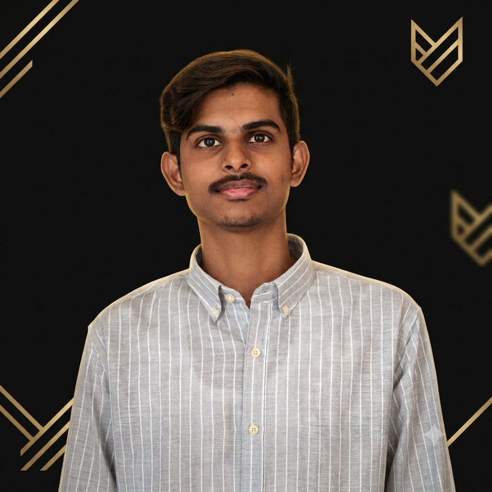

Reviving Tamil
knowledge, one model at a time.
I'm Ajeem, a second-year AI & Data Science undergrad building TAMIL-AI.ME — a translation, retrieval, and inscription-OCR platform for Tamil literature and Chola-era epigraphy. Target: a research role at Sarvam AI by 2028.

About
Most Indic NLP tooling treats Tamil as an afterthought — bolted onto multilingual models trained mostly on English and Hindi data. I'm building the opposite: infrastructure that starts from Tamil literature, Tamil script, and Tamil epigraphy, and works outward.
My flagship project, TAMIL-AI.ME, combines a 4,500+ entry classical-Tamil corpus with a retrieval-augmented pipeline built on IndicTrans2 and ChromaDB. Alongside it, KalVettu (கல்வெட்டு) is an OCR pipeline aimed at over 40,000 undeciphered Chola-era stone inscriptions.
I work in a multi-model engineering loop — Claude for architecture and review, ChatGPT and DeepSeek for parallel implementation — treating AI tools the way a small team would use specialized engineers.